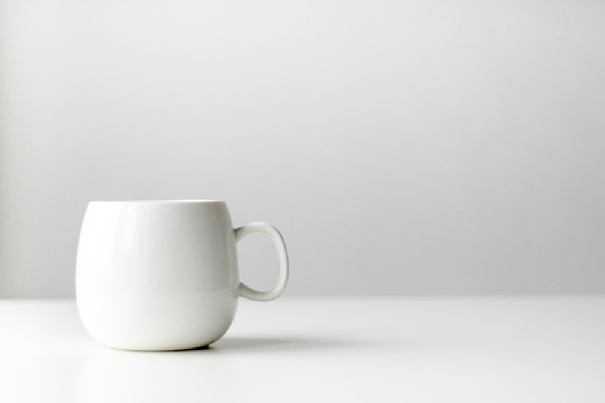

Listing state
{
"title": "Ceramic mug",
"condition": "new",
"photo": "@product"
}Questions
category Choice
listing_quality Score
product_present Noul
product_region Box
Decision results
Home & livingProduct present 98%
Listing quality 3.6 / 4

product_regionA · Split workbench
Edit and inspect side by side